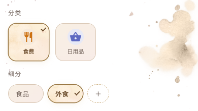
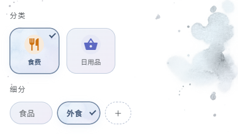
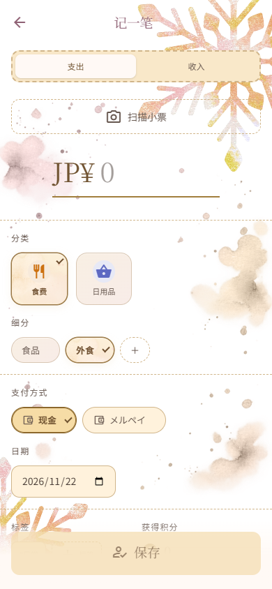
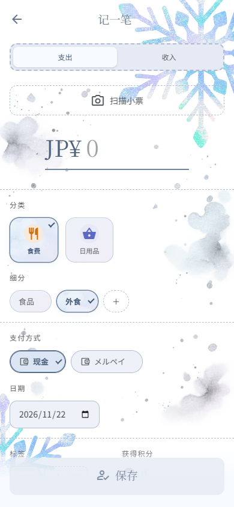

<!doctype html><html lang="zh-CN"><meta charset="utf-8"><meta name="viewport" content="width=device-width,initial-scale=1">
<title>冬雪分类 · 原墨染放大</title>
<style>body{margin:0;padding:24px;background:#F7F7F8;color:#42444A;font:15px/1.6 system-ui}main{max-width:850px;margin:auto}h1{font-size:23px;margin:0 0 8px}h2{font-size:18px;margin:24px 0 12px}p{margin:0 0 20px}.pages{display:grid;grid-template-columns:repeat(2,minmax(0,1fr));gap:28px}figure{margin:0}figcaption{margin-bottom:10px}img{display:block;width:100%;height:auto;max-width:390px}a{color:#596F8E}footer{margin-top:24px}@media(max-width:650px){.pages{grid-template-columns:1fr}figure{max-width:390px;margin:auto}}</style>
<main><h1>分类区 · 原墨染放大</h1><p>沿用前一版墨染与配色，放大纹理、调整裁切，让墨染延伸到整个分类框。原图没有重存或压缩。</p>
<div class="pages"><figure><figcaption>暖金</figcaption><a href="winter-category@3x.png"></a></figure><figure><figcaption>银灰</figcaption><a href="winter-silver-category@3x.png"></a></figure></div>
<h2>实际页面</h2><div class="pages"><figure><figcaption>冬雪 · 暖金</figcaption><a href="winter-page.png"></a></figure><figure><figcaption>冬雪 · 银灰</figcaption><a href="winter-silver-page.png"></a></figure></div>
<footer><p>用户已确认并接入。页面使用隔离示例数据，原图1024×1536，显示范围340×510；已检查手机3倍屏上的纹理和墨染下文字。</p><a href="preview.css">设计样式</a> · <a href="runtime/styles/winter-controls.css">实际接入样式</a> · <a href="checks.json">3倍屏检查</a> · <a href="runtime/checks.json">完整控件回归</a></footer></main></html>
